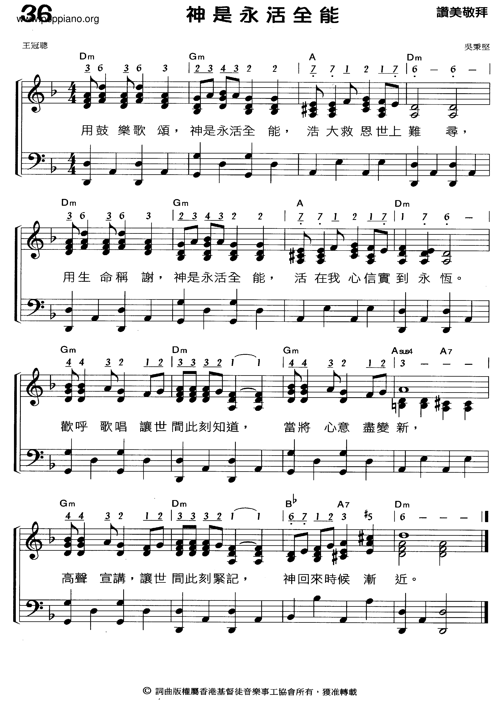

|
|
【神是永活全能】 |
|
|
用鼓樂歌頌，神是永活全能， |
|
https://www.poppiano.org/sheet/?id=65804
 |
|
|
|
|

神是永活全能（曲：吳秉堅；詞：王冠聰） https://www.youtube.com/watch?v=dPZiwvdHjIU https://youtu.be/7iH9LQWb9CY
「齊唱吳秉堅之歌」
https://www.krt.com.hk/post/6427/355-12/https://www.krt.com.hk/post/6427/355-12/https://www.krt.com.hk/post/6427/355-12/https://www.krt.com.hk/post/6427/355-12/https://www.krt.com.hk/post/6427/355-12/https://www.krt.com.hk/post/6427/355-12/
福音音樂界響噹噹的名字-吳秉堅,原來已屆七十歲，剛剛過去的三月一及二日，於麥花臣舉行了他自傳音樂會，當晚，曾路德、鍾氏兄弟、金培達、robynn&kendy也作表演嘉賓。
他的歴史真的值得數一數，八一年憑「城市之歌」奪得「城市民歌公開創作比賽」新曲新詞組亞軍，他負責作曲。
於流行音樂界，也曾發表過「破曉時分」（徐小鳳）、讓我怨一次（羅嘉良）⋯。
八十年代，他成立了HKACM香港基督徒音樂事工協會，發表「齊唱新歌」一系列作品，包括「祂的一生」、「願」、「親愛主」⋯，成為教會團契的必唱作品，也將福音音樂滲入流行音樂，讓其普及化。
當然，最為人津津樂道的是一九八六年推出教會組合「赤道」，推出「有情天地」大碟，其中「無言者」更罕有地打入電台流行榜，當年負責發行是藝視唱片，高層Ivy推廣「赤道」的確十分落力，可惜前後只推出了三張碟就解散了，同是基督徒的成員吳潔梅、郭多加、劉向榮等各散東西，藝視唱片就簽了吳㓗梅作個人發展，出過一張碟「Florence」，之後她也隱退了，我仍然記得她有一支歌叫「我愛大樹熊」。
福音音樂近年已漸漸普及化，英皇娛樂出版過一系列羣星福音唱片合輯，周慧敏、Sammi也曾推出過福音唱片，以其知名度推廣福音音樂，環球唱片近年大力宣傳鍾氏兄弟，他們曾推出過「齊唱吳秉堅之歌」。
我也深信福音音樂應該不限於教會專享，他應該是屬於香港文化遺產的一部份。
https://www.facebook.com/popmusicguide/posts/365961247332578?_rdr
https://www.krt.com.hk/post/6427/355-12/